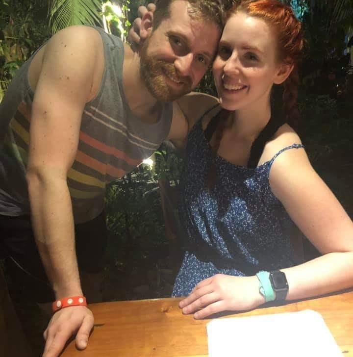

Zachary Barrington Home Page

Who I am
I am a 29 year old laid back guy taking each day at a time.
After high-school I earned a bachelors degree in psychology at Wayne State University
A few years after that I decided I wanted to get into programming so I decided to join the Grand Circus bootcamp team.
Currently i'm engaged and have two dogs and two cats that live with me as well.
For fun I enjoy playing video games, fantasy football, and playing softball.
Development Experience
Science and Technology have always been a passion in my life
Experience in basic fundamentals in c++ through course work at Wayne State University
Currently working on c# development at Grand Circus in Detroit MI
If you would like to find out more information about my professional activities please continue to my about section, or portfolio section.
Home Life
I grew up in Sterling Heights Michigan with my family of 6
I have three siblings, two sisters and a brother, and I am the oldest =]
Recently became an Uncle to this cute little guy
Currently I live in Ferndale MI in a house with my amazing fiancee and lovely animals
Jaxx
Fozzy
Phoebe
Athena
To find more information about Zachary please click from one of the following two links below

.jpg)
.jpg)
.jpg)